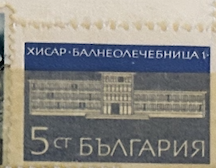
| SOURCE | TITLE| IMAGE MATCH | click to source page |
| Моя коллекция | 185-188. К 300-летию Российского флота. Географические экспедиции. | 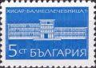 |
| Dreamstime.com | Postage Stamp Wellness Stock Photos - Free & Royalty-Free Stock Photos from Dreamstime | 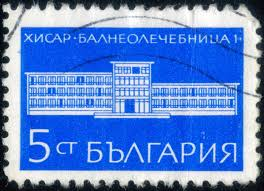 |
| Dreamstime.com | Cancelled Postage Stamp Printed by Bulgaria, that Shows Hisar Sanatorium Editorial Photography - Image of philately, sanatorium: 203838662 | 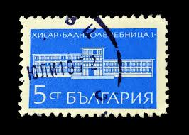 |
| Dreamstime.com | Postage Stamps with the Image of Polyclinic in Naretschen. from the Series on Spas, Circa 1969 Editorial Image - Image of city, stamp: 392991565 | 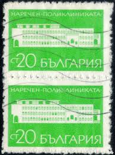 |
| healthinstamps.com | When sun, air, water and food treated Tuberculosis | 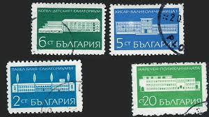 |
| Alamy | BULGARIA - CIRCA 1969: stamp printed by Bulgaria, shows Trapeze Artists, circa 1969 Stock Photo - Alamy | 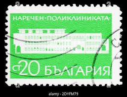 |
| eBay | Bulgaria 643-645 (complete issue) unmounted mint / never hinged 1948 clear brand | eBay Australia | 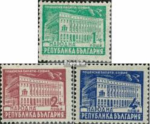 |
| eBay | BULGARIA-MNH** MINI SHEET-HOTEL SHERATON-1991. | eBay | 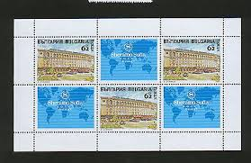 |
| notafilia-kp.com | 20 leva, 1947 | notafilia-kp.com | 106764 | paper money | 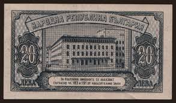 |
| eBay UK | Bulgaria 1947-48 SG651 1l blue green Government Building GPO Sofia Used 2 shades | eBay UK | 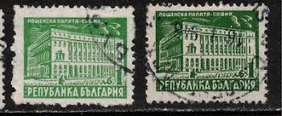 |
| | Katz Auction | Bulgaria 20 Leva 1947 | Katz Auction | 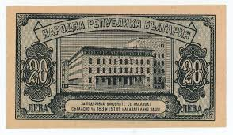 |
| eBay | BULGARIAN NATIONAL BANK 1947 20 LEVA P-74 VF | eBay | 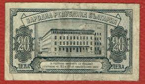 |
| eBay | BULGARIA - 2 USED REGULAR STAMPS, 2L - PLATE ERROR "POINT" - LOOK -1947/48. | eBay | 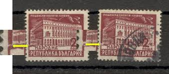 |
| CGB Numismatics | 20 Leva BULGARIA 1947 P.074a b92_7735 Banknotes | 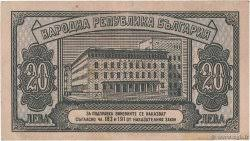 |
| Todocolección | bulgaria 1989 serie 4 stamps used mnh wwf bats - Buy Antique stamps of Bulgaria on todocoleccion | 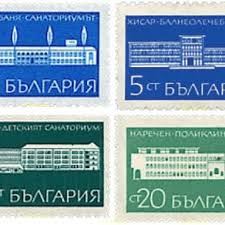 |
| eBay | Bulgarien Michelnummer 3928 Kleinbogen gestempelt (europa:6141) | eBay | 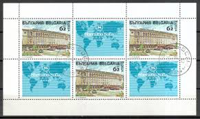 |
| eBay | BULGARIA - 20 LEVA 1950 UNC P 79a | eBay | 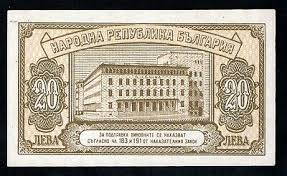 |
| eBay | BULGARIA-MNH** STMAP-HOTEL SHERATON-1991. | eBay | 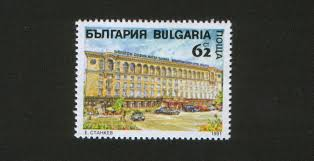 |
| Colnect | Stamp: Sanatorium in Pavel Banya (Bulgaria(Spas) Mi:BG 1965,Sn:BG 1825,Yt:BG 1744,Sg:BG 1945,AFA:BG 1933,Un:BG 1951 📮 | 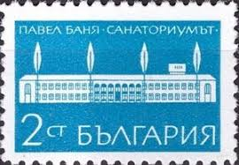 |
| Blogger.com | Stamp Art: Dimitar Gyudzhenov | 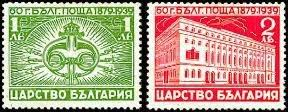 |
| Free stamp catalogue | Stamps from Bulgaria - Freestampcatalogue.com - The free online stampcatalogue with over 500.000 stamps listed. | 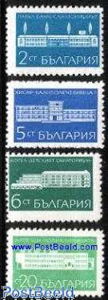 |
| Colnect | Stamp: Central Post Office in Sofia (Bulgaria(Definitives: Buildings) Mi:BG 644,Sn:BG 594,Yt:BG 534,Sg:BG 662,AFA:BG 647,Un:BG 644 📮 | 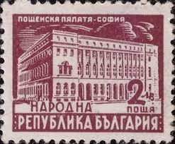 |
| Dreamstime.com | Facade of Post Office Building in Sofia, Definitives: Buildings Serie, Circa 1947 Editorial Photo - Image of june, emblem: 101755401 | 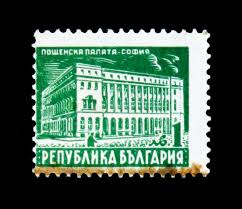 |
| Numista | 20 Leva - Болгария – Numista | 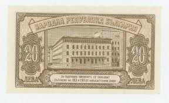 |
| Bid Inside Auctions | Bulgaria 20 Leva 1947 Pick 74a. UNC. - Auctions - Coins.ee | 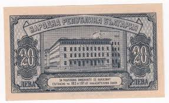 |
| eBay | BULGARIA 1991 HOTEL SHERATON MINI SHEET MNH ** | eBay | 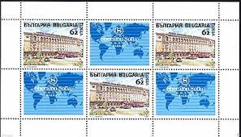 |
| eBay | Bulgarien - KB 3928, gestempelt, | eBay | 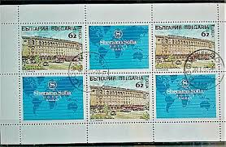 |
| CollectorBazar | Bulgaria 20 leva 1947, x rare, unc #g1 | 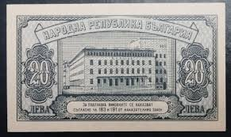 |
| Delcampe | Bulgaria - RARE LOT SET SANATORIUM HISAR+KOTEL+PAVEL BANQ NRB BULGARIA ST STAMP TIMBRE | 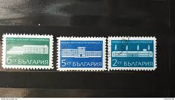 |
| Colnect | Stamp: General Post Office, Sofia (Bulgaria(Definitives: Buildings) Mi:BG 645,Sn:BG 595,Yt:BG 535,Sg:BG 663,AFA:BG 650,Un:BG 645 📮 | 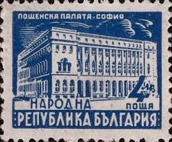 |
| papelmoneda.es | 1947 - Bulgaria PIC 74 20 Leva banknote | 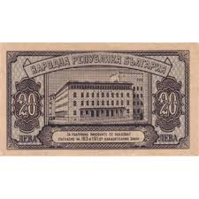 |
| | Katz Auction | Bulgaria 20 Leva 1950 | Katz Auction | 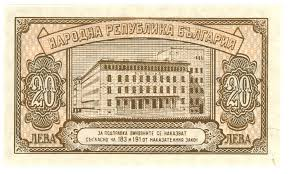 |
| Numista | 20 Leva - Bulgaria – Numista | 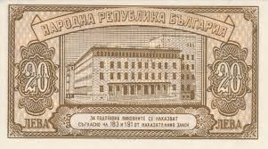 |
| Freestampcatalogue.com | Stamps from Bulgaria - Freestampcatalogue.com - The free online stampcatalogue with over 500.000 stamps listed. | 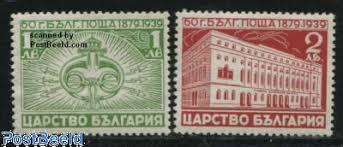 |
| Dreamstime.com | Postage Stamp Printed in Greece Shows Tsanakleios School, Komotini (Rhodope), Prefecture Capitals Serie, 120 - Greek Drachma, Editorial Photography - Image of prefecture, retro: 166641237 | 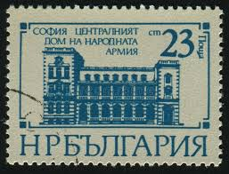 |
| eBay | 1950 Bulgarian Paper Money for sale | eBay | 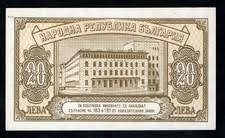 |
| Mystic Stamp | 2437-42 - 1977 Bulgaria - Mystic Stamp Company | 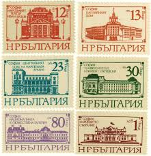 |
| eBay UK | BULGARIA - 2 USED REGULAR STAMPS, 2L - PLATE ERROR "POINT" - LOOK -1947/48. | eBay UK | 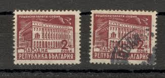 |
| | Katz Auction | Bulgaria 20 Leva 1950 | Katz Auction | 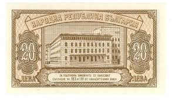 |
| eBay | 947352) Map, Bulgaria | eBay | 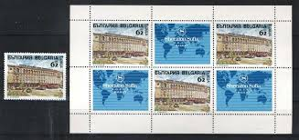 |
| iStock | Old Confederate Currency Stock Photo - Download Image Now - 1863, American One Hundred Dollar Bill, Antiquities - iStock | 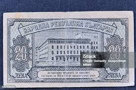 |
| Alamy | School 1968 hi-res stock photography and images - Alamy | 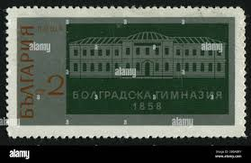 |
| Todocolección | bulgaria yvert 205-214, serie sin 209 ni 210 - Compra venta en todocoleccion | 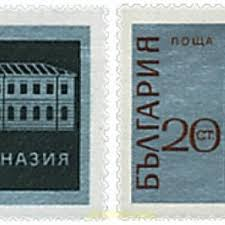 |
| Dreamstime.com | Fachada Del Edificio De La Oficina De Correos En Sofía, Definitives: Serie De Los Edificios, Circa 1947 Foto editorial - Imagen de : 101755401 | 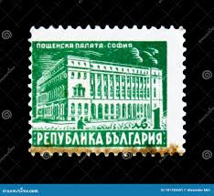 |
| Alamy | Postal stamp bulgaria hi-res stock photography and images - Alamy | 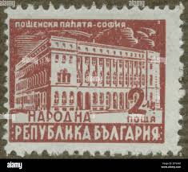 |
| stampphenom.com | Bulgaria 1911 Definitives - Views of Bulgaria and Royal Portraits – StampPhenom | 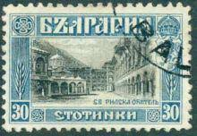 |
| eBay | Architecture Used Bulgarian Stamps for sale | eBay | 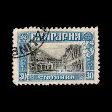 |
| Delcampe | 1945-59 People's Republic - RARE 1+2+4 LEV CENTRAL POST OFFICE,SOFIA NATIONAL THEATER NRB BULGARIA USED STAMP TIMBRE | 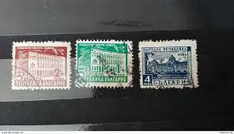 |
| Colnect | Stamp: Main Post Office in Sofia (Bulgaria(60 years Bulgarian post) Mi:BG 359,Sn:BG 351,Yt:BG 334,Sg:BG 423,Un:BG 359 📮 | 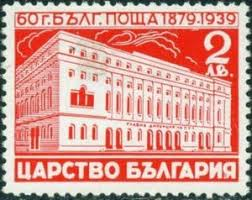 |
| 1958. БЪЛГАРИЯ ก C 2 БОЛГРАДСКА бОЛгРАДСКАГИМНАЗИЯ ГИМНАЗИЯ 1858 18 58 | ||
| eBay | Bulgaria 20 Leva 1950. Bulgarian Uncirculated Banknote. Twenty Leva UNC Bill | eBay | |
| eBay | Bulgaria 1929-1930, MNH. Michel 2082-2083.Secondary School in Bolgrad, 1971. | eBay | |
| Alamy | 2 bulgarian stotinka hi-res stock photography and images - Alamy | |
| eBay | BULGARIA 594 - Architecture "General Post Office, Sofia" (pb21671) | eBay | |
| eBay | BULGARIA MNH # 1929-30 EDUCATORS DIMITER MITEV SCHOOL | eBay | |
| eBay | BULGARIA 1941 ARCHITECTURE NEW BUILDINGS BANK HOSPITAL PALACE OF JUSTICE SET MNH | eBay | |
| philatelicmarket.com | post stamps 60th Anniv of Bulgarian P.O. Inscr “1879 1939” bulgaria 1939 | |
| Alamy | Bulgaria Postage Stamp - 1969 Stock Photo - Alamy | |
| filateliaargentina.org | Bulgaria 1911 Recess printed in Rome - Foro de Filatelia Argentina |